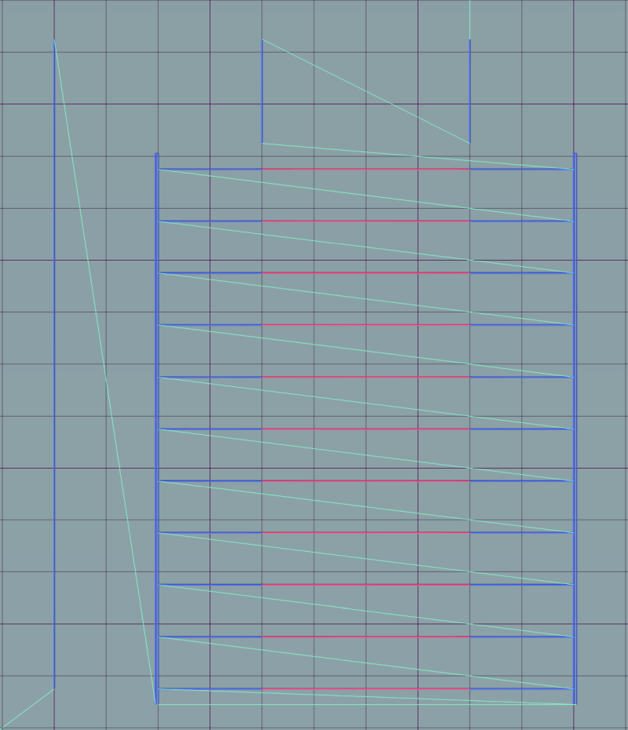

K-factor Calibration Pattern
Caution!
K-values for Linear Advance 1.0 and 1.5 are not compatible.
Linear Advance 1.0 is used in Marlin 1.1.8 & Prusa Firmware 3.8.1 and earlier.
Linear Advance 1.5 is used in Marlin 1.1.9 & Prusa Firmware 3.9.0 and later.
Use this form to generate G-code that you can use to calibrate your Linear Advance K-factor.
Default values apply to standard PLA with a 0.4mm nozzle, 0.20mm layer height on Prusa MK3S and default settings in PrusaSlicer 2.2.0 Quality printing profile.
Press the Generate G-code button followed by Download as file to save the result.
Settings |
G-code |
||
1. Printer: |
|||
| Select the printer firmware. | |||
| Enter printer name. | |||
| Enter Filament name/tpye/material. | |||
| Diameter of the used filament (mm) | |||
| Diameter of the nozzle (mm) | |||
| Nozzle Temperature (°C) | |||
| Bed Temperature (°C) | |||
| Retraction distance (mm) | |||
| Layer Height (mm) | |||
| Extruder Index (0 to ?) | |||
| Fan Speed (%) | |||
2. Print Bed: |
|||
| Rectangular or round bed. Round beds will activate Origin Bed Center |
|||
| Size (mm) of the bed in X | |||
| Size (mm) of the bed in Y | |||
| Set the origin position (X0 Y0) to bed center instead of front-left corner |
|||
3. Speed: |
|||
| Use mm/s instead of mm/m | |||
| Printing qualitiy settings | |||
| Slow printing speed | |||
| Fast printing speed. This should differ noticeably from Slow Speed |
|||
| Movement speed | |||
| Retract Speed of the extruder | |||
| Unretract Speed of the extruder | |||
| Set printing acceleration (mm/s^2) | |||
| Set the Jerk for the X-axis. -1 to use firmware default | |||
| Set the Jerk for the Y-axis. -1 to use firmware default | |||
| Set the Jerk for the Z-axis. -1 to use firmware default | |||
| Set the Jerk for the Extruder. -1 to use firmware default | |||
4. Pattern: |
|||
| Select version 1.0 for Marlin 1.1.8, Prusa Firmware 3.8.1 and earlier. Select 1.5 for Marlin 1.1.9 / 2.0 Prusa Firmware 3.9.0 and up. |
|||
| Select standard or alternate pattern | |||
| Starting value for the K-factor | |||
| Ending value of the K-factor. Direct extruder ~0.3 / Bowden extruder ~2.0 | |||
| Stepping of the K-factor in the test pattern. Needs to be an exact divisor of the K-factor Range (End - Start). Direct extruder ~0.02 / Bowden extruder ~0.2 |
|||
| Length of the Slow Speed test-line (mm) | |||
| Length of the Fast Speed test-line (mm) | |||
| Distance between the test lines. This will impact print size | |||
| Adds a frame around the start and end points of the test lines. May improve adhesion |
|||
| Rotates the print in 45° steps | |||
| Prints the K-value besides every second test line | |||
5. Advanced: |
|||
| Ratio between extruded line width and nozzle diameter. Should be between 1.05 and 1.25. Example 0.4mm Nozzle and 0.45 Extrusion width: 0.45/0.4=1.125 |
|||
| Lift Z during retraction | |||
| Offset the Z-axis for manual Layer adjustment | |||
| Level bed or load a saved mesh (i.e. for UBL) before printing. Bed leveling has to be activated in Configuration.h! Loading a mesh requires UBL to be activated! |
|||
| Use Firmware Retract. Needs to be activated in Marlin | |||
| Usually 1.0 | |||
| Prime the nozzle before starting the test pattern | |||
| The default of 2.5 results in roughly 1mm of filament for 10mm line length | |||
| Speed of the prime move | |||
| Inserts a pause of x seconds before starting the test pattern to bleed off any residual nozzle pressure |
|||
| If you don't change the default filename "LA-filament-printer" we will generate automatically one for you. |
|||
|
|||
Notes on the settings:
Fast Printing SpeedandSlow Printing Speedshould be significantly different or the K-factor effect will barely be visible.Use Bed Levelingrequires a probe.- For round beds the option
Origin Bed Centeris automatically activated. - The overall width (X-direction) of the print depends on the
Fast Speed LengthandSlow Speed Lengthsettings plus 5mm for the priming line. The length (Y-direction) depends on the K-factor Settings andLine Spacing. - The script checks to make sure the print fits on the bed. Verify it using a host software like Printrun or Repetier Host.
StartandEnd Valuefor the K-factor determines the range that the test pattern will cover. For example aStart Valueof 50 and anEnd Valueof 150 will test a range of 100.- The
K-factor Steppingdetermines how many test lines are printed for the above range. For example, a Stepping of 10 and a range of 100 results in 10 test lines. A stepping of 3 would not work in this example as 100 cannot be exactly divided by 3. The script will throw an error message if an exact division is not possible. In this case either the range or the stepping needs to be adjusted. - The
Alternate Patternhas a second line ofFast Printing Speedto test 0 toFast Printing Speedand back to 0 conditions. Best used with an increasedTest Line Spacingand reduced K-factor range. - The proper K-factor depends on the filament, nozzle size, nozzle geometry and printing temperature. If any of these values change, the calibration might need to be repeated.
Screen-shots
The following screen-shots show some examples of the test patterns
- Blue Lines are Slow Printing Speeds
- Red Lines are Fast Printing Speed
- Light blue lines are movements
Standard Pattern

Alternate Pattern with increased Test Line Spacing
Standard Pattern with Frame
